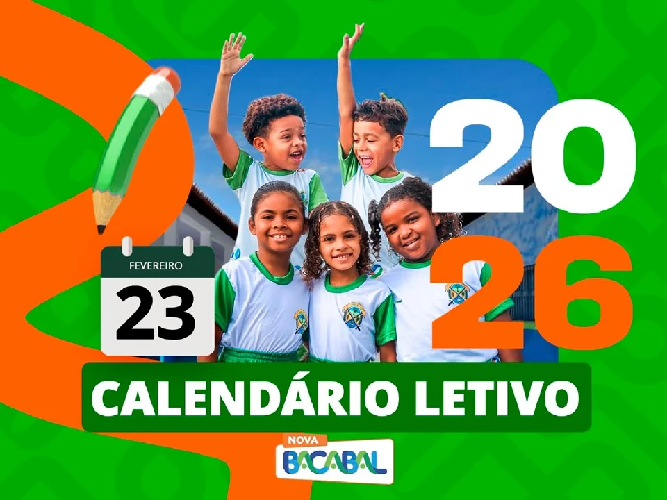

Ano letivo 2026
Calendário letivo
Consulte as páginas do Calendário Letivo da SEMED de Bacabal e baixe o documento completo em PDF.

Página 1 de 15
Consulte as páginas do Calendário Letivo da SEMED de Bacabal e baixe o documento completo em PDF.
